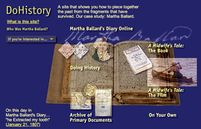

This is an archived copy of History Matters, provided by the Roy Rosenzweig Center for History and New Media. To explore this content in a new interface, visit Who Built America?.

Do History
http://www.DoHistory.org.
Created and maintained by the Film Study Center at Harvard University.
Reviewed Jan. 1–15, 2001.
Imagine a Home Depot for historians. After browsing aisles piled with raw materials and receiving expert advice from a well-trained staff, could the do-it-yourselfer craft an elegant book or a compelling documentary? Yes, answers Do History, a superb online resource that invites visitors to explore the process of “piecing together the lives of ordinary people,” in this case, of the eighteenth-century Maine midwife Martha Ballard. Experimental and interactive, the aptly named Do History aims to provide users with the tools to rebuild the past from scratch.

Access to the transcription feature on the Martha Ballard’s Diary Online page.
Intent upon making us think about how we know what we know, Do History is both a teaching tool and an archive. As a case study of the writing of A Midwife’s Tale (1990), Laurel Thatcher Ulrich’s award-winning narrative of Ballard’s life, and of the development of Laurie Kahn-Leavitt’s acclaimed 1998 film based on the book, it is also part fanzine, with material that prime-time television might hawk as "The Making of A Midwife’s Tale." Both book and movie have deservedly won ardent admirers (myself among them). Still, I wonder how much visitors to the site will learn from reading Ulrich’s 1981 National Endowment for the Humanities proposal for the project, much less her 1991 Bancroft Prize acceptance speech.
Historians will find much more to chew on in Do History's online compendium of the documents Ulrich used to uncover Ballard’s story. The backbone of the site’s “Archive of Primary Sources” is, of course, the now-legendary diary that Martha Ballard kept between 1785 and 1812. The ways Do History presents that diary should convince any remaining doubters of the tremendous power of the Web for teaching and research. Here, in searchable form, is the entirety of Ballard’s personal record, all 1,430 manuscript pages (nearly ten thousand individual entries). A “view text/view image” toggle allows viewers to switch between a careful transcription and Ballard’s difficult script, which has been digitally enhanced to make online browsing arguably easier than reading the original. Various search features take the scholar far beyond the bricks and mortar archive. Users can “turn” the diary’s pages, jump to a chosen date, or even take in a “year at a glance.” Both the manuscript and the typescript can also be parsed by word, phrase, or subject.
But what to make of this wealth of raw data? Or, to return to the Home Depot analogy, what can you construct from these assorted boards and nails? Do History provides the user with a variety of innovative building plans. Click on “decoding the diary,” and windows open onto a manuscript page to demystify Ballard’s habits of record keeping. Or follow the link to “Stories and Themes from the Diary” to consider groups of entries that Ulrich wove together in the chapters of A Midwife’s Tale. Although Ballard’s diary receives most of the interactive attention, other sources, too, are hyperlinked with cues and clues for the historian-in-training—suggested “questions to ask” of passages in a medical treatise, for example.
A section of the site entitled “Doing History” brings these skills together in two extended interactive case studies. Here, the viewer becomes Ulrich’s shadow, investigating and documenting some of the themes and events featured in A Midwife’s Tale. Finally, Do History's visitors receive a “History Toolkit” to use in their own projects—tools that include well-written lessons on “What to Do with a Diary You’ve Found” and “How to Read Probate Records,” among other topics.
In sum, Do History is an innovative and often dazzling resource that will delight scholars and students alike. All this technology does not come cheap; the editorial director, Laurie Kahn-Leavitt, estimates that building the site cost over $250,000. Much more funding will be needed to expand Do History beyond the borders of Martha Ballard’s life and times, as its developers originally planned. At times this visitor longed for more of the world beyond A Midwife’s Tale, even at the price of giving up some of the site’s costly eye candy, such as the “magic lens” and other animated sequences. But if the hip look of Do History can make high-tech teens feel at home in the eighteenth century, such bells and whistles will represent money well spent.
Jane Kamensky
Brandeis University
Waltham, Massachusetts